NINTENDO SWITCH ●
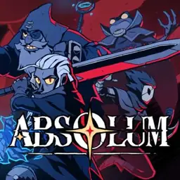
001PIXELS REAL ACESSÓRIOS · COLEÇÃO DE JOGOS
Mundos para explorar. Histórias para viver.
Encontre seu próximo jogo na coleção da Pixels.

001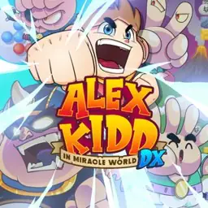
002Plataformas clássicas, desafios e partidas de pedra, papel e tesoura.
Sobre o jogo ↗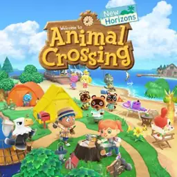
003Crie sua ilha, decore sua casa e conviva com moradores carismáticos.
Sobre o jogo ↗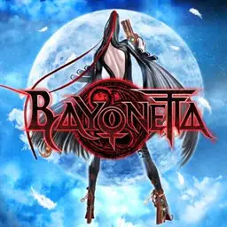
004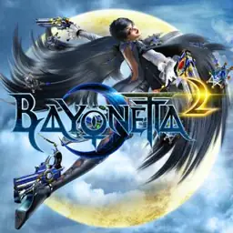
005Combates cheios de estilo e invocações poderosas em uma aventura sobrenatural.
Sobre o jogo ↗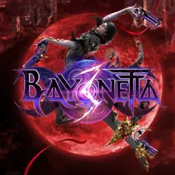
006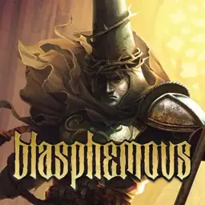
007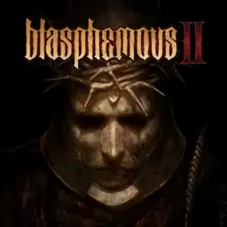
008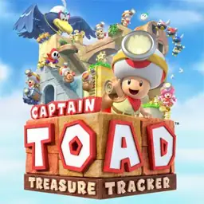
009Resolva pequenos dioramas cheios de segredos e desafios de perspectiva.
Sobre o jogo ↗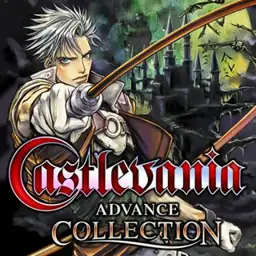
010Coletânea de aventuras clássicas com exploração, monstros e castelos.
Sobre o jogo ↗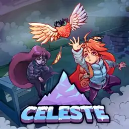
011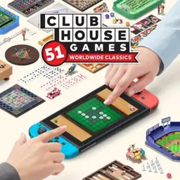
012Uma seleção de jogos de tabuleiro, cartas e outras atividades clássicas.
Sobre o jogo ↗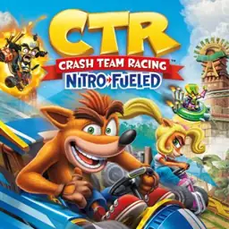
014Corridas de kart com derrapagens, itens e personagens da série Crash.
Sobre o jogo ↗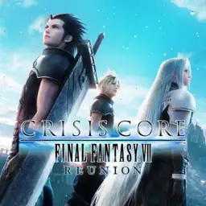
015Acompanhe Zack em um RPG de ação ligado ao universo de Final Fantasy VII.
Sobre o jogo ↗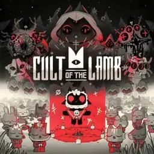
016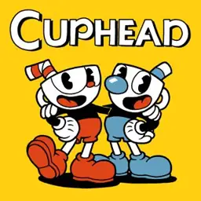
017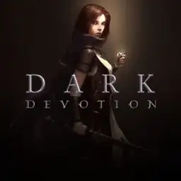
018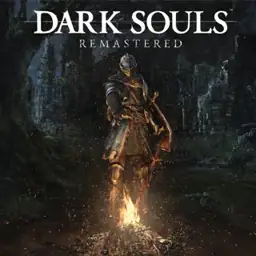
019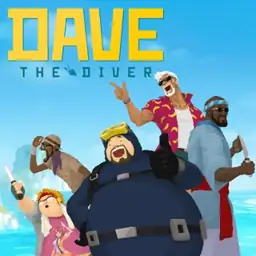
020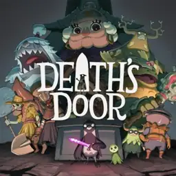
021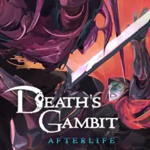
022Ação em plataformas, exploração e confrontos em um mundo sombrio.
Sobre o jogo ↗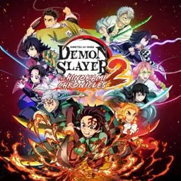
023Reviva confrontos do anime em batalhas de arena.
Sobre o jogo ↗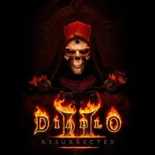
024Explore masmorras, reúna equipamentos e enfrente forças demoníacas.
Sobre o jogo ↗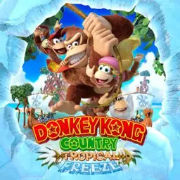
025Plataformas criativas e desafios com a família Kong.
Sobre o jogo ↗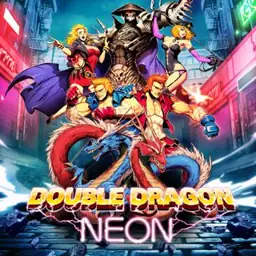
026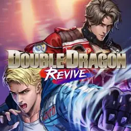
027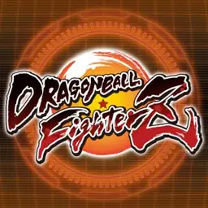
028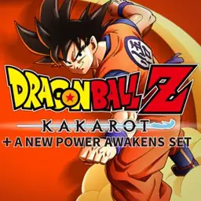
029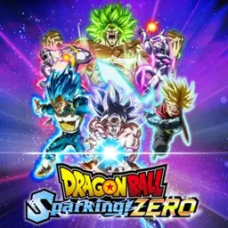
030Batalhas em arenas com personagens e poderes de Dragon Ball.
Sobre o jogo ↗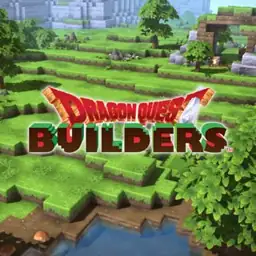
031Construa cenários, reúna recursos e explore um mundo de fantasia.
Sobre o jogo ↗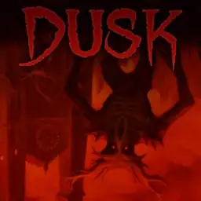
032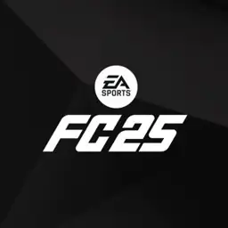
033Futebol com clubes, seleções e diferentes modos de disputa.
Pacotes de idiomas também aparecem na lista.
Sobre o jogo ↗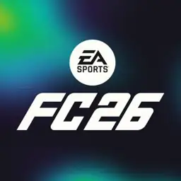
034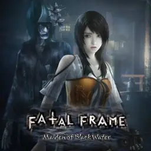
035Investigue aparições usando uma câmera capaz de enfrentar espíritos.
Sobre o jogo ↗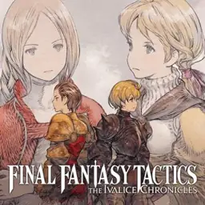
036Estratégia por turnos e intrigas no mundo de Ivalice.
Sobre o jogo ↗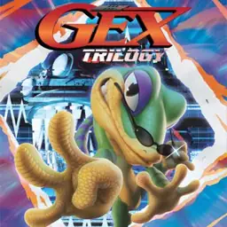
037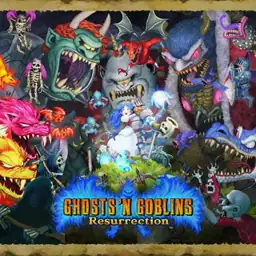
038Arthur enfrenta monstros em fases desafiadoras de ação e plataformas.
Sobre o jogo ↗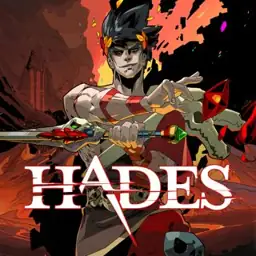
039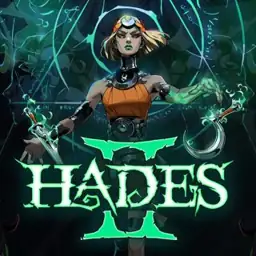
040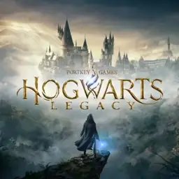
041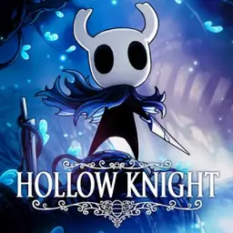
042Descubra os segredos de um reino subterrâneo em uma aventura de exploração.
Sobre o jogo ↗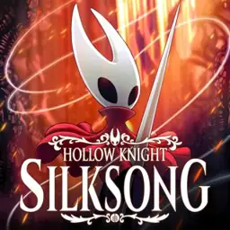
043Acompanhe Hornet em uma jornada de ação, agilidade e exploração.
Sobre o jogo ↗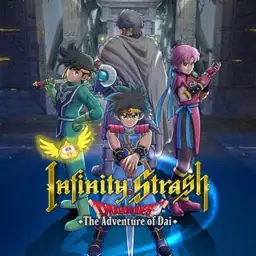
044Combates de ação inspirados nas aventuras de Dai.
Sobre o jogo ↗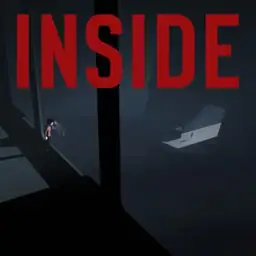
045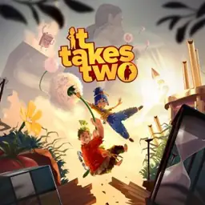
046Explore Nosgoth em duas aventuras de ação e enigmas.
Sobre o jogo ↗Atravesse cenários detalhados e resolva desafios de física e plataformas.
Sobre o jogo ↗Explore cenários perturbadores em uma aventura de suspense e plataformas.
Sobre o jogo ↗Ação e exploração em um mundo de fantasia sombria.
Sobre o jogo ↗Os irmãos embarcam em um RPG de aventuras e ataques em dupla.
Sobre o jogo ↗Batalhas táticas por turnos com Mario e os irreverentes Rabbids.
Sobre o jogo ↗Resolva fases de plataformas e enigmas para recuperar os Mini-Marios.
Sobre o jogo ↗Coletânea de clássicos de luta e ação dos arcades.
Sobre o jogo ↗Uma operação de espionagem com furtividade e reviravoltas.
Sobre o jogo ↗Samus retorna em uma aventura de exploração em primeira pessoa.
Sobre o jogo ↗Ação retrô com os Power Rangers contra os planos de Rita.
Sobre o jogo ↗Use transformações para explorar cenários e resolver desafios.
Sobre o jogo ↗Desvende segredos na escola Monster High com sua própria personagem.
Sobre o jogo ↗Lutas e golpes especiais em uma nova versão do universo Mortal Kombat.
A lista também menciona Reina o Kaos.
Sobre o jogo ↗Batalhas ninja com personagens de Naruto e Boruto.
Sobre o jogo ↗Basquete e desafios com atletas e equipes da NBA.
Listado somente como arquivo .torrent; instalação a confirmar.
Sobre o jogo ↗Acompanhe Evan em uma jornada para construir um novo reino.
Sobre o jogo ↗Um jovem entra em um mundo mágico em busca de respostas.
Sobre o jogo ↗Ação e reflexões em um mundo dominado por máquinas.
Sobre o jogo ↗Explore um mundo encantado com movimentos ágeis e novas habilidades.
Sobre o jogo ↗Explore um reino de papel ameaçado pelo poder do origami.
Sobre o jogo ↗Comande equipes de Pikmin para explorar um planeta e superar obstáculos.
Sobre o jogo ↗Defenda seu jardim com plantas em batalhas estratégicas contra zumbis.
Sobre o jogo ↗Explore Hisui e investigue Pokémon em uma aventura de descoberta.
Sobre o jogo ↗Explore Paldea, encontre Pokémon e siga diferentes caminhos de aventura.
Sobre o jogo ↗Combates ágeis e poderes temporais em uma aventura de exploração.
Sobre o jogo ↗Plataformas coloridas com fases musicais e desafios cooperativos.
Sobre o jogo ↗Luta de rua em pixel art inspirada no universo de Scott Pilgrim.
Sobre o jogo ↗Ação ninja em plataformas com armas e desafios de estilo retrô.
Sobre o jogo ↗Corridas com personagens de Sonic e pistas conectadas entre mundos.
Sobre o jogo ↗Aventuras de Sonic e Shadow com velocidade e desafios de plataformas.
Sobre o jogo ↗Batalhas de tinta e ação com Inklings.
Octo Expansion também aparece na lista.
Sobre o jogo ↗Coletânea que reúne clássicos da série de luta Street Fighter.
Sobre o jogo ↗Plataformas em 3D e uma aventura extra contra um Bowser gigantesco.
Sobre o jogo ↗Disputa online de plataformas; serviço encerrado, mantido como registro da coleção.
Sobre o jogo ↗Plataformas cheias de surpresas e transformações no Reino Flor.
Sobre o jogo ↗Duas aventuras de plataformas com planetas e desafios de gravidade.
Sobre o jogo ↗Batalhas de arena com personagens de diversas séries de jogos.
Sobre o jogo ↗As Tartarugas Ninja enfrentam aventuras roguelike em busca de Splinter.
Sobre o jogo ↗Ação lateral em pixel art inspirada em O Exterminador do Futuro 2.
Sobre o jogo ↗Explore salas imprevisíveis e combine itens em uma aventura roguelike.
Na lista: Afterbirth; edição Switch usada como referência.
Sobre o jogo ↗Explore um vasto mundo de fantasia com missões, magia e dragões.
Sobre o jogo ↗Combates em equipes com animação de luta em 2D.
Na lista: The King of Fighters 13; edição Switch usada como referência.
Sobre o jogo ↗Explore Hyrule livremente e descubra santuários, desafios e segredos.
Sobre o jogo ↗Investigue a ilha de Koholint em uma aventura com enigmas e masmorras.
Sobre o jogo ↗Descubra uma aventura nas origens da lenda de Zelda.
Sobre o jogo ↗Explore terras e céus de Hyrule com novas habilidades de construção.
Sobre o jogo ↗As três primeiras aventuras de Lara Croft em uma coletânea remasterizada.
Sobre o jogo ↗Sobrevivência, exploração e ação na origem de Lara Croft.
Sobre o jogo ↗Acompanhe o cotidiano e as relações de personagens Mii.
Sobre o jogo ↗Combine as habilidades de três heróis para resolver enigmas e avançar.
Sobre o jogo ↗Nenhum jogo encontrado. Tente outro nome ou limpe os filtros.
A pasta reúne as bibliotecas de clássicos de NES e Super NES.
Aplicativo da biblioteca de jogos clássicos do Nintendo 64.
Aplicativo de clássicos do Mega Drive / Genesis.
Emulador de PSP mencionado na lista. Os jogos internos não foram informados.
Estes registros precisam de identificação ou confirmação antes de receber uma capa específica.
Nome incompleto na lista; edição a confirmar.
Pasta de série; jogos internos não identificados na imagem.
Nome abreviado; título e edição a confirmar.
Subtítulo e edição não legíveis na lista.
Nome presente na pasta; conteúdo e funcionamento não verificados.
Projeto de fãs listado como homebrew; versão para Switch a confirmar.
Catálogo organizado a partir das duas imagens enviadas pela Pixels. São 153 registros de títulos e coletâneas, sem duplicações, além de 4 registros retrô e 6 itens a conferir. Pacotes, atualizações e extensões NSP/NSZ/XCI não contam como jogos adicionais. Mario Kart 8 foi reunido com Mario Kart 8 Deluxe; Skyrim com The Elder Scrolls V: Skyrim. Pikmin 1+2 e Super Mario Galaxy + Super Mario Galaxy 2 contam como um registro cada.
NBA 2K25 aparece somente como arquivo .torrent, o que não confirma a presença do jogo. Super Mario Bros. 35 foi mantido como registro histórico: seu serviço foi encerrado. Pastas app, APP SWITCH, Softwares para uso no PC, DBI, GNX, Tinfoil e sphaira foram identificadas como utilitários, não como jogos.
Capas digitais de identificação obtidas do catálogo Nintendo eShop, com metadados indexados pelo TitleDB. Cada cartão possui um link de consulta à Nintendo. Edições, idiomas, DLCs, funcionamento e disponibilidade devem ser confirmados com a loja.
Jogos, marcas e imagens pertencem aos respectivos titulares. Catálogo independente da Pixels Real Acessórios, sem vínculo oficial com a Nintendo. A decoração usa formas geométricas, estrelas e elementos retrô originais.
Informação oficial sobre Super Mario Bros. 35 · Super Mario Galaxy + Super Mario Galaxy 2